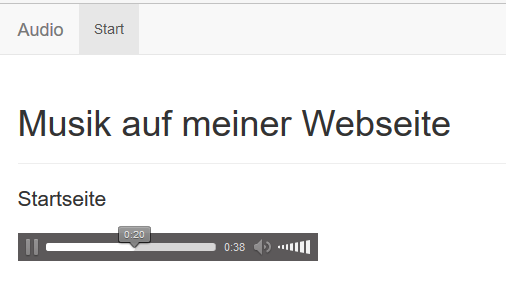
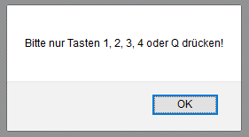
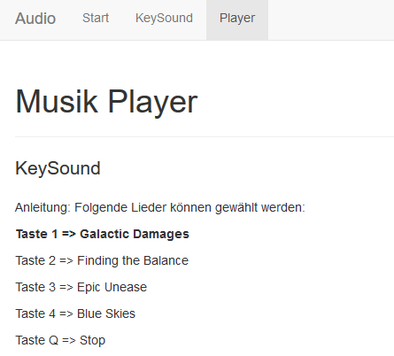

jQuery Sound Aufgabe
Aufgabenstellung
1) Richten Sie Ihre Startseite so ein, dass beim Start der Index-Seite das MP3-File «Epic_Unease.mp3» abgespielt wird. Bitte denken Sie daran, dass es mit HTML5 das «audio»-Tag gibt.
2) Um den Besucher der Webseite nicht zu erschrecken, stellen Sie den Player so ein, dass er nur mit Lautstärke von 50% startet.
3) Erstellen Sie eine neue Seite «sound.html». Bei dieser Seite sollen die Tastendrücke abgefangen und als Sound wiedergegeben werden. Folgende Tasten sind zu implementieren:
- Taste 1 => numberOne.mp3
- Taste 2 => numberTwo.mp3
- Taste 3 => numberThree.mp3
- Taste Up => moveUp.mp3
- Taste Down => moveDown.mp3
- Taste Left => left.mp3
- Taste Right => right.mp3
4) Erstellen Sie eine neue Seite «player.html». Diese Seite wird ein selbst programmierter Musikplayer sein. Folgende Tasten sind zu belegen:
- Taste 1 => Galactic_Damages.mp3
- Taste 2 => Finding_the_Balance.mp3
- Taste 3 => Epic_Unease.mp3
- Taste 4 => Blue_Skies.mp3
Es muss so programmiert sein, dass wenn Sie zwischen den Liedern wechseln, die Lieder da weitermachen, wo Sie beim Umschalten waren (Pause-Funktion). Wenn Q geklickt wird, sollen alle Lieder gestoppt werden, sprich dann beginnen die Lieder ab diesem Moment (alle) wieder von vorne.
Ausserdem soll mit fetter Schriftart angezeigt werden, welches Lied gerade abgespielt wird. Zum Beginn wird das erste Lied abgespielt.
Wenn eine andere Taste gedrückt wird, soll eine Meldung angezeigt werden, dass nur gültige Tasten gedrückt werden dürfen:
 Lösungen
Musik auf meiner Webiste
Lautstärke 50%
Funktioniert nicht
Musik per Tastendruck
KeySound
Anleitung: Folgende Tasten erzeugen Sound(1, 2, 3, Up, Down, Left, Right)